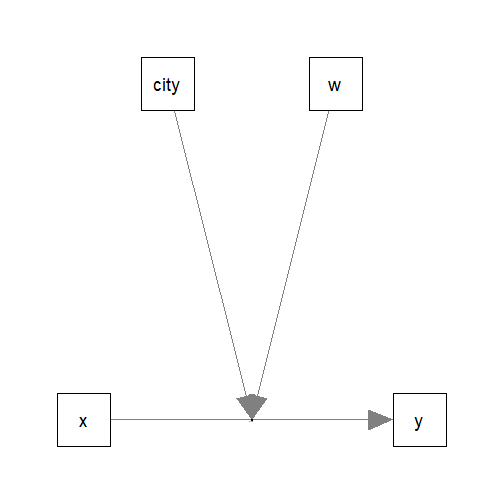
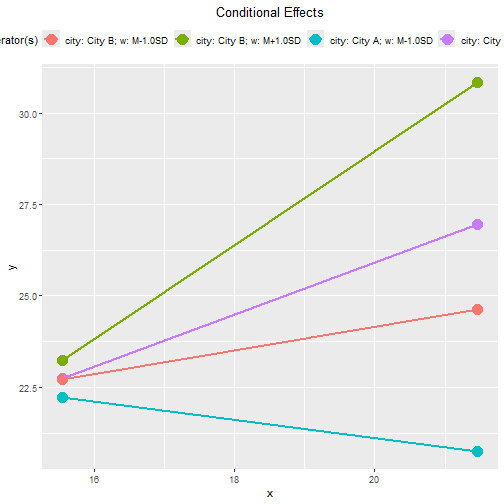
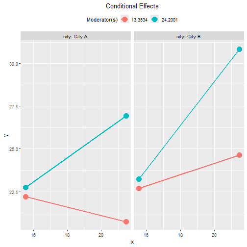
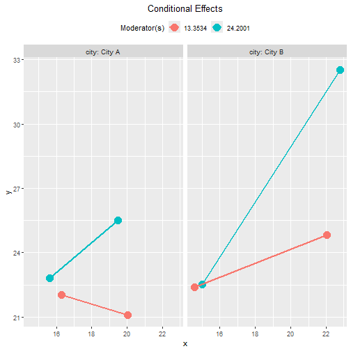
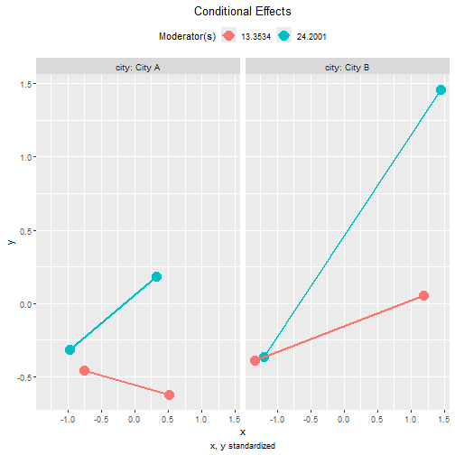
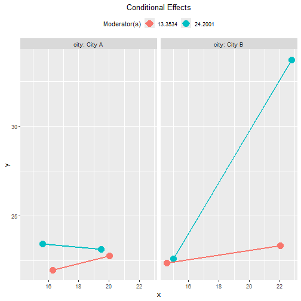
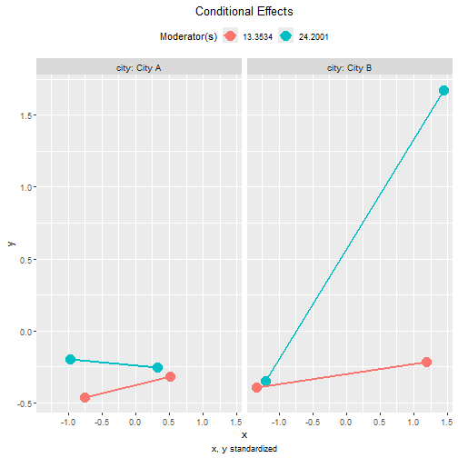

Moderated Regression: Numerical and Categorical Moderators
Shu Fai Cheung & Sing-Hang Cheung
2026-08-30
Source:vignettes/articles/mo_lm_cat_num_2w.Rmd
mo_lm_cat_num_2w.RmdIntroduction
This article is part of a series of brief illustrations of how to use
cond_effects() from the package manymome (Cheung & Cheung, 2024) to estimate the
conditional effects when the model parameters are estimated by ordinary
least squares (OLS) multiple regression using lm(). For
moderated mediation tested by OLS regression, please refer to this article.
(Articles in this series had duplicated sections to make each of them self-contained.)
Data Set and Model
This is the sample data set used for illustration:
library(manymome)
dat <- data_mod_cat_num_2w
print(head(dat), digits = 3)
#> x w y c1 c2 city
#> 1 17.4 19.2 18.4 22.5 27.6 City A
#> 2 18.0 18.1 30.8 24.1 17.5 City A
#> 3 19.1 22.7 17.7 29.0 12.0 City A
#> 4 19.5 13.7 24.2 24.6 18.4 City A
#> 5 16.6 24.3 22.0 22.2 20.8 City A
#> 6 17.9 15.6 21.3 24.1 19.8 City AThis dataset has 6 variables:
one outcome variable (
y),one predictor (
x),one numerical moderator (
w).one categorical moderator (
city),two control variables (
c1andc2).
The moderator city has two possible values:
"City A" and "City B".
Models with only numerical moderators or only categorical moderators have been covered in other articles of this series. Therefore, only two models will be considered: a model with no three-way interaction and a model with three-way interaction.
One Numerical Moderator and One Categorical Moderator
Suppose this is the model being fitted, with control variables omitted from the plot for readability:

Fit by Regression
The path parameters can be estimated by multiple regression using
lm():
lm_y <- lm(
y ~ w*x + city*x + c1 + c2,
data = dat
)These are the estimates of the regression coefficients of the paths:
summary(lm_y)
#>
#> Call:
#> lm(formula = y ~ w * x + city * x + c1 + c2, data = dat)
#>
#> Residuals:
#> Min 1Q Median 3Q Max
#> -8.9852 -2.6831 -0.2673 2.8285 12.6873
#>
#> Coefficients:
#> Estimate Std. Error t value Pr(>|t|)
#> (Intercept) 40.71044 8.09286 5.030 1.12e-06 ***
#> w -1.32342 0.36592 -3.617 0.000381 ***
#> x -1.42616 0.42465 -3.358 0.000945 ***
#> cityCity B -8.43872 4.81058 -1.754 0.080992 .
#> c1 -0.04418 0.06852 -0.645 0.519863
#> c2 0.22908 0.06722 3.408 0.000797 ***
#> w:x 0.08828 0.02020 4.370 2.03e-05 ***
#> x:cityCity B 0.57437 0.26404 2.175 0.030832 *
#> ---
#> Signif. codes: 0 '***' 0.001 '**' 0.01 '*' 0.05 '.' 0.1 ' ' 1
#>
#> Residual standard error: 4.169 on 192 degrees of freedom
#> Multiple R-squared: 0.4438, Adjusted R-squared: 0.4235
#> F-statistic: 21.89 on 7 and 192 DF, p-value: < 2.2e-16Conditional Effects
We can now use cond_effects() to estimate the effects of
x on y for different levels of w
and different cities.
(Refer to vignette("manymome") and the help page of
cond_effects() on the arguments.)
out <- cond_effects(
wlevels = c("city", "w"),
x = "x",
y = "y",
fit = lm_y
)
out
#>
#> == Conditional effects ==
#>
#> Path: x -> y
#> Conditional on moderator(s): city, w
#> Moderator(s) represented by: cityCity B, w
#> Computation Formula:
#> (b.y~x + (b.w:x)*(w) + (b.x:cityCity B)*(cityCity B))
#>
#>
#> [city] [w] (cityCity B) (w) ind SE Stat pvalue Sig CI.lo CI.hi
#> 1 City A M+1.0SD 0 24.200 0.710 0.267 2.660 0.008 ** 0.184 1.237
#> 2 City A M-1.0SD 0 13.353 -0.247 0.247 -1.001 0.318 -0.735 0.240
#> 3 City B M+1.0SD 1 24.200 1.285 0.151 8.491 0.000 *** 0.986 1.583
#> 4 City B M-1.0SD 1 13.353 0.327 0.170 1.927 0.055 -0.008 0.662
#>
#> - [SE] are regression standard errors.
#> - [Stat] are the t statistics used to test the effects.
#> - [pvalue] are p-values computed from 'Stat'.
#> - [Sig]: 0 '***' 0.001 '**' 0.01 '*' 0.05 ' ' 1.
#> - [CI.lo to CI.hi] are 95.0% confidence interval computed from regression standard errors.
#> - The 'ind' column shows the conditional effects.
#> - Call 'print_all_cond_indirect_effects()' to print the detailed outputs of all levels.The column ind shows the effects of x on
y for combinations of the levels of the moderators.
IMPORTANT: Even though this model does not have a three-way
interaction, the conditional effects still need to consider
both moderators. It is because the effect of x
depends on all moderators, whether there is a higher-order
interaction or not.
If one or more moderators are omitted, a warning message will be issued. This is an example:
cond_effects(
wlevels = "w",
x = "x",
y = "y",
fit = lm_y
)
#> Warning in (function (xi, yi, yiname, digits = 3, y, wvalues = NULL, warn = TRUE, : cityCity B modelled as moderator(s)
#> for the path from y~x to y but not included in 'wvalues'. They will be set to zero in computing the conditional effect,
#> which may not be meaningful. Please check.
#> Warning in (function (xi, yi, yiname, digits = 3, y, wvalues = NULL, warn = TRUE, : cityCity B modelled as moderator(s)
#> for the path from y~x to y but not included in 'wvalues'. They will be set to zero in computing the conditional effect,
#> which may not be meaningful. Please check.
#> Warning in (function (xi, yi, yiname, digits = 3, y, wvalues = NULL, warn = TRUE, : cityCity B modelled as moderator(s)
#> for the path from y~x to y but not included in 'wvalues'. They will be set to zero in computing the conditional effect,
#> which may not be meaningful. Please check.
#>
#> == Conditional effects ==
#>
#> Path: x -> y
#> Conditional on moderator(s): w
#> Moderator(s) represented by: w
#> Computation Formula:
#> (b.y~x + (b.w:x)*(w) + (b.x:cityCity B)*(cityCity B))
#>
#>
#> [w] (w) ind SE Stat pvalue Sig CI.lo CI.hi
#> 1 M+1.0SD 24.200 0.710 0.267 2.660 0.008 ** 0.184 1.237
#> 2 Mean 18.777 0.231 0.233 0.994 0.321 -0.228 0.691
#> 3 M-1.0SD 13.353 -0.247 0.247 -1.001 0.318 -0.735 0.240
#>
#> - [SE] are regression standard errors.
#> - [Stat] are the t statistics used to test the effects.
#> - [pvalue] are p-values computed from 'Stat'.
#> - [Sig]: 0 '***' 0.001 '**' 0.01 '*' 0.05 ' ' 1.
#> - [CI.lo to CI.hi] are 95.0% confidence interval computed from regression standard errors.
#> - The 'ind' column shows the conditional effects.
#> - Call 'print_all_cond_indirect_effects()' to print the detailed outputs of all levels.NOTE: The standard error (SE) and related results are
computed using the pick-a-point approach by Rogosa (1980).
Plotting the Conditional Effects
The output of cond_effects() has a plot
method for plotting the conditional effects:
plot(out)
By default, the lines span the range of one standard deviation below and above the mean of the predictor.
The plot can be customized in a lot of ways. Please refer to the help
page of plot.cond_indirect_effects() for available
options.
For two or more moderators, it is not easy to visualize the conditional effects if all lines are plotted on the same graph.
The argument facet_grid_cols can be used to plot the
effect of one moderator for each level of the other moderator.
In this case, it is natural to plot the moderating effect of
w in each city:
plot(out,
facet_grid_cols = "city")
Note that, without three-way interaction, the moderating
effect of w is the same in all cities. The lines are
different simply because the effect of x depends on
both w and city. They do not
denote a three-way interaction (because it is not in the regression
model).
Tumble Plot
If the distribution of the x variable may vary for
different levels of the moderators, a version of tumble graph
proposed by Bodner (2016) can be plotted
by adding graph_type = "tumble":
plot(out,
facet_grid_cols = "city",
graph_type = "tumble")
In this example, the distributions of x for the two
cities are different: The standard deviations of x are
larger in City B. Therefore, the tumble graph is more appropriate than
the conventional graph.
Standardized Conditional Effects
Although OLS can be used to estimate and test the unstandardized effects, it is inappropriate for forming the confidence intervals for the standardized effects. See Yuan & Chan (2011) on the issue of standardized regression coefficients.
To form nonparametric bootstrap confidence intervals for effects to
be computed, add boot_ci = TRUE, R to the
number of bootstrap samples (should be 5000 or even 10000, for multiple
regression), and seed (set it to an integer to ensure the
results are reproducible).
The standardized conditional effects from x to
y conditional on w and city can
be estimated by setting standardized_x and
standardized_y to TRUE.
This is the output:
std <- cond_effects(
wlevels = c("city", "w"),
x = "x",
y = "y",
fit = lm_y,
boot_ci = TRUE,
R = 5000,
seed = 54532,
standardized_x = TRUE,
standardized_y = TRUE
)
#> 19 processes started to run bootstrapping.
std
#>
#> == Conditional effects ==
#>
#> Path: x -> y
#> Conditional on moderator(s): city, w
#> Moderator(s) represented by: cityCity B, w
#> Computation Formula:
#> (b.y~x + (b.w:x)*(w) + (b.x:cityCity B)*(cityCity B))*sd_x/sd_y
#>
#>
#> [city] [w] (cityCity B) (w) std CI.lo CI.hi Sig ind
#> 1 City A M+1.0SD 0 24.200 0.383 0.090 0.679 Sig 0.710
#> 2 City A M-1.0SD 0 13.353 -0.133 -0.492 0.194 -0.247
#> 3 City B M+1.0SD 1 24.200 0.692 0.538 0.851 Sig 1.285
#> 4 City B M-1.0SD 1 13.353 0.176 -0.016 0.350 0.327
#>
#> - [CI.lo to CI.hi] are 95.0% percentile confidence intervals by nonparametric bootstrapping with 5000
#> samples.
#> - std: The standardized conditional effects.
#> - ind: The unstandardized conditional effects.
#> - Call 'print_all_cond_indirect_effects()' to print the detailed outputs of all levels.Plot Standardized Conditional Effects
The plot() method can also be used on the standardized
conditional effects, although the only differences are the values
displayed on the axes:
plot(std,
facet_grid_cols = "city",
graph_type = "tumble")
One Numerical Moderator and One Categorical Moderator, with Three-Way Interaction
Suppose that we suspect that the two moderators interact with each
other. That is, the moderating effect of w on the effect of
x may not be the same in the two cities.
The steps demonstrated above can also be used in this regression model:
lm_y_city_x_w <- lm(
y ~ x*city*w + c1 + c2,
data = dat
)These are the estimates of the regression coefficients of this model:
summary(lm_y_city_x_w)
#>
#> Call:
#> lm(formula = y ~ x * city * w + c1 + c2, data = dat)
#>
#> Residuals:
#> Min 1Q Median 3Q Max
#> -8.5552 -2.6543 -0.2097 2.5379 13.0804
#>
#> Coefficients:
#> Estimate Std. Error t value Pr(>|t|)
#> (Intercept) 8.00474 13.73622 0.583 0.560754
#> x 0.56284 0.74693 0.754 0.452058
#> cityCity B 33.04780 15.79870 2.092 0.037785 *
#> w 0.55856 0.71716 0.779 0.437037
#> c1 -0.04241 0.06614 -0.641 0.522120
#> c2 0.23012 0.06622 3.475 0.000632 ***
#> x:cityCity B -2.02718 0.87260 -2.323 0.021229 *
#> x:w -0.02640 0.04021 -0.657 0.512205
#> cityCity B:w -2.33308 0.82853 -2.816 0.005377 **
#> x:cityCity B:w 0.14589 0.04601 3.171 0.001773 **
#> ---
#> Signif. codes: 0 '***' 0.001 '**' 0.01 '*' 0.05 '.' 0.1 ' ' 1
#>
#> Residual standard error: 4.022 on 190 degrees of freedom
#> Multiple R-squared: 0.4876, Adjusted R-squared: 0.4634
#> F-statistic: 20.09 on 9 and 190 DF, p-value: < 2.2e-16The three-way interaction term, x:city City B:w, is
significant, suggesting a three-way interaction.
Conditional Effects
The function cond_effects() can be used in exactly the
same way, whether the moderators interact with each other or not:
out_city_x_w <- cond_effects(
wlevels = c("city", "w"),
x = "x",
y = "y",
fit = lm_y_city_x_w
)
out_city_x_w
#>
#> == Conditional effects ==
#>
#> Path: x -> y
#> Conditional on moderator(s): city, w
#> Moderator(s) represented by: cityCity B, w
#> Computation Formula:
#> (b.y~x + (b.x:cityCity B)*(cityCity B) + (b.x:w)*(w) + (b.x:cityCity B:w)*(cityCity B*w))
#>
#>
#> [city] [w] (cityCity B) (w) ind SE Stat pvalue Sig CI.lo CI.hi
#> 1 City A M+1.0SD 0 24.200 -0.076 0.344 -0.221 0.825 -0.754 0.602
#> 2 City A M-1.0SD 0 13.353 0.210 0.285 0.738 0.461 -0.352 0.772
#> 3 City B M+1.0SD 1 24.200 1.427 0.156 9.170 0.000 *** 1.120 1.734
#> 4 City B M-1.0SD 1 13.353 0.131 0.176 0.745 0.457 -0.216 0.479
#>
#> - [SE] are regression standard errors.
#> - [Stat] are the t statistics used to test the effects.
#> - [pvalue] are p-values computed from 'Stat'.
#> - [Sig]: 0 '***' 0.001 '**' 0.01 '*' 0.05 ' ' 1.
#> - [CI.lo to CI.hi] are 95.0% confidence interval computed from regression standard errors.
#> - The 'ind' column shows the conditional effects.
#> - Call 'print_all_cond_indirect_effects()' to print the detailed outputs of all levels.The results show that, within one standard deviation of the mean of
w, x has significant effects only in City
B.
Plotting the Conditional Effects
These are the tumble plots of the conditional effects, with
facet_grid_cols set:
plot(out_city_x_w,
facet_grid_cols = "city",
graph_type = "tumble")
Standardized Conditional Effects
This is the output of the standardized conditional effects, with bootstrap confidence intervals:
std_city_x_w <- cond_effects(
wlevels = c("city", "w"),
x = "x",
y = "y",
fit = lm_y_city_x_w,
boot_ci = TRUE,
R = 5000,
seed = 54532,
standardized_x = TRUE,
standardized_y = TRUE
)
#> 19 processes started to run bootstrapping.
std_city_x_w
#>
#> == Conditional effects ==
#>
#> Path: x -> y
#> Conditional on moderator(s): city, w
#> Moderator(s) represented by: cityCity B, w
#> Computation Formula:
#> (b.y~x + (b.x:cityCity B)*(cityCity B) + (b.x:w)*(w) + (b.x:cityCity B:w)*(cityCity B*w))*sd_x/sd_y
#>
#>
#> [city] [w] (cityCity B) (w) std CI.lo CI.hi Sig ind
#> 1 City A M+1.0SD 0 24.200 -0.041 -0.458 0.343 -0.076
#> 2 City A M-1.0SD 0 13.353 0.113 -0.372 0.433 0.210
#> 3 City B M+1.0SD 1 24.200 0.769 0.626 0.925 Sig 1.427
#> 4 City B M-1.0SD 1 13.353 0.071 -0.127 0.216 0.131
#>
#> - [CI.lo to CI.hi] are 95.0% percentile confidence intervals by nonparametric bootstrapping with 5000
#> samples.
#> - std: The standardized conditional effects.
#> - ind: The unstandardized conditional effects.
#> - Call 'print_all_cond_indirect_effects()' to print the detailed outputs of all levels.These are the plots of the standardized conditional effects, with
facet_grid_cols set:
plot(std_city_x_w,
facet_grid_cols = "city",
graph_type = "tumble")
Other Moderated Regression Models
The function cond_effects() has no limit on the number
of moderators and the number of predictors with their effects
moderated.
The demonstrations of other moderated regression models can be found in the list of articles.
The levels for the moderators are controlled by
mod_levels() and related functions in the same way whether
a model is fitted by lavaan::sem() or lm().
Please refer to other articles (e.g., vignette("manymome")
and vignette("mod_levels")) on how to estimate effects in
other models analyzed by multiple regression.